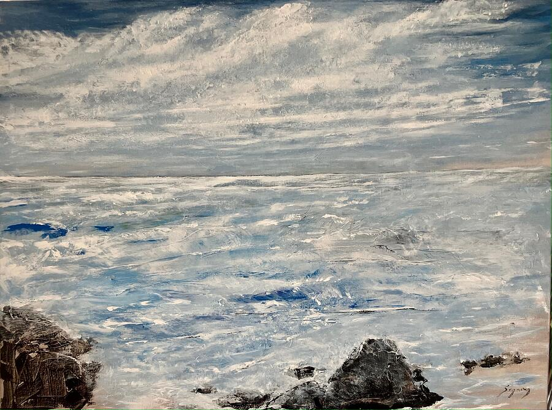
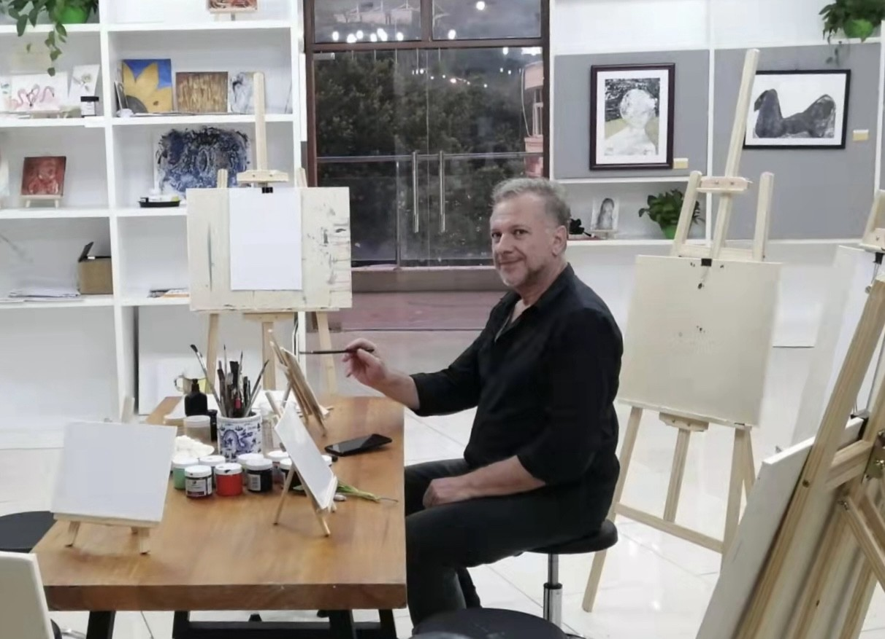

01 / ANGELO SEGARRA
Seascape with Rocky Shore
Where does your eye travel first: the sky, the water, or the shore?
View prints on Fine Art America ↗Every painting is an invitation to see differently.
Look closely. Notice what catches your attention. Discover your own interpretation.
Explore the paintings ↓
Painting is part of my creative life. It is a place to observe, imagine, experiment, and discover what emerges.
These paintings are invitations to look. The questions alongside them offer a starting point for your own reflections.
Each work retains its original proportions. Prints and available sizes can be explored through the individual artwork links.
Where does your eye travel first: the sky, the water, or the shore?
View prints on Fine Art America ↗What can a portrait suggest without explaining?
View prints on Fine Art America ↗How does a change in line alter the feeling of a face?
View prints on Fine Art America ↗What appears when you let your eye wander?
View prints on Fine Art America ↗What do you notice in the spaces between the figures?
View prints on Fine Art America ↗How do colour and posture shape your impression?
View prints on Fine Art America ↗What gives a still figure a sense of presence?
View prints on Fine Art America ↗Where does a face become a pattern—and a pattern become a face?
View prints on Fine Art America ↗What creates a feeling of stillness for you?
Buy 5 × 7 print — $19.95 ↗What remains when colour gives way to tone?
View prints on Fine Art America ↗How much can a figure suggest through shape and texture?
View prints on Fine Art America ↗A boy, a shell, and an unexpected encounter. A short film inspired by one of my paintings, narrated in my own voice.
When was the last time something ordinary surprised you?
Painting and narration by Angelo Segarra · Approximately 80 seconds

I’m Angelo Segarra—artist, author, and founder of Creative Intelligence World. My background in sculpture, comparative religion, and Whole Systems Design informs my exploration of creativity and change.
Painting and teaching are connected parts of that exploration: paying attention, trying something, and learning through the experience.
More about Angelo →Discover new paintings, books, and creative experiences. Occasional updates from Angelo Segarra and Creative Intelligence World.
Stay connected — free →Optional. Unsubscribe anytime.
You bring a perspective of your own. Explore it with the free three-minute Creative Intelligence quiz.
Explore your creative perspectives →No payment required.